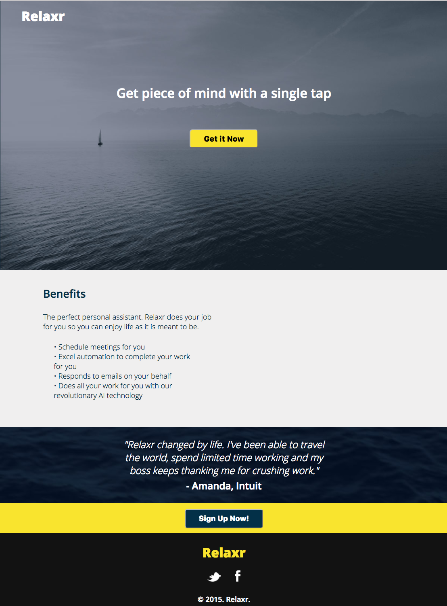

Experience
I recently started a Web Development Immersive course at General Assembly, where I am learning HTML, CSS, JavaScript, and probably some other things! During my spare time, I enjoy senior water aerobics, pickling, and spending time with my goldfish, Jerry.
Web Developer, Relaxr 2017 - present
Developed a multi-column layout blog, landing page, and contact forms that render on mobile devices.

Web Developer, Startup Matchmaker 2017 - present
Used a design team's wireframes to develop this company's responsive homepage.

Web Developer, CitiPix 2017 – present
Built web app prototype that allows users to store and quickly retrieve photos using keywords.

EDUCATION
- General Assembly — WDI 2017
- University of Delaware - 2010 (Dean's List)
- Pittsford Sutherland — 2006 (Honors)